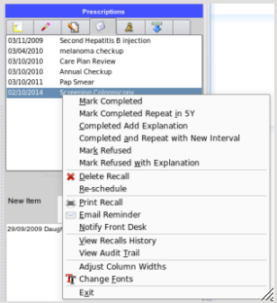

|  | All outstanding recalls will be found in the main recalls list - located on the tabbed lists window on the upper right
side of the screen.
During consultations you will complete many of these recalls, or the clinical situation may have changed - for example
the person may have had a proceedure such as a pap smear somewhere else, or the recall or reminder is no longer needed, or
simply the patient refuses to have the recall completed.
By right mouse clicking on the list, the menu with all its options will appear for your selection.
Note particularly that the option 'Mark completed and repeat in..' has automatically included the time interval.
|